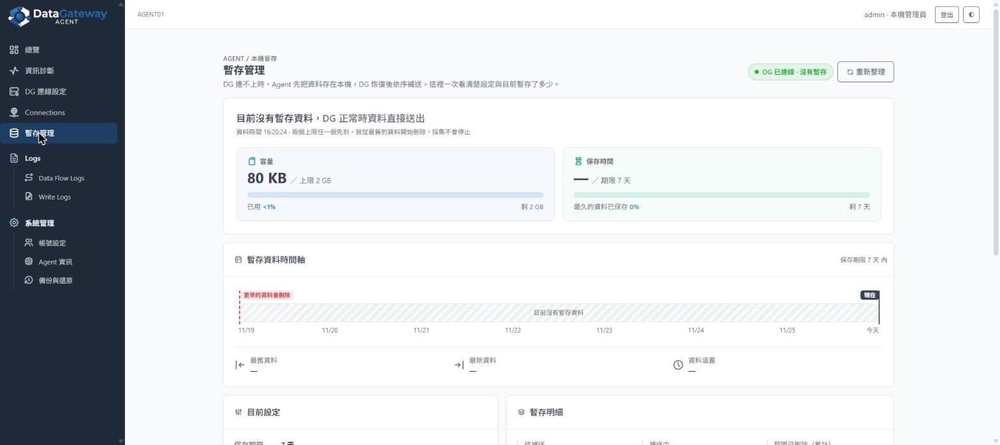

暫存管理
DG 連不上時，Agent 先把資料存在本機，DG 恢復後依序補送。這頁一次看清楚設定與目前暫存了多少。
查看暫存狀態

- 點「暫存管理」，看右上狀態（例如「DG 已連線 · 沒有暫存」）。
- 看「容量」與「保存時間」的用量與上限。
- 看「暫存資料時間軸」的最舊資料、最新資料與資料涵蓋。
- 看「暫存明細」：待補送、補送中、超限已刪除（累計）、DG 拒收紀錄、暫存檔大小、可用磁碟。
DG 正常時顯示沒有暫存；DG 中斷期間待補送筆數增加，恢復後逐步歸零。
上限在「DG 連線設定 › 本機暫存保存上限」調整（第 3 章）。兩個上限任一個先到，就從最舊的資料開始刪除，採集不會停止。
失敗時先查
- 超限已刪除持續增加：DG 中斷太久或上限太小，加大上限並儘快恢復 DG 連線。
刪除暫存資料
- 只刪最舊一段（例如設備維修期間的錯誤資料）：按「選擇時間…」，設定「刪除採集時間早於」的時間，按「查看會刪除多少」。
- 確定不需要補送（例如 Agent 移到另一個現場）：按「清空全部…」。
- 畫面顯示將刪除的筆數與時間範圍，勾選「我了解這些資料會被刪除且不會補送」後執行。
待補送筆數減少；被刪除的資料不會再補送到 DG。
刪除後無法復原，這些資料不會出現在 DG 的歷史中。
失敗時先查
- 刪除按鈕不能按：還沒勾選確認。